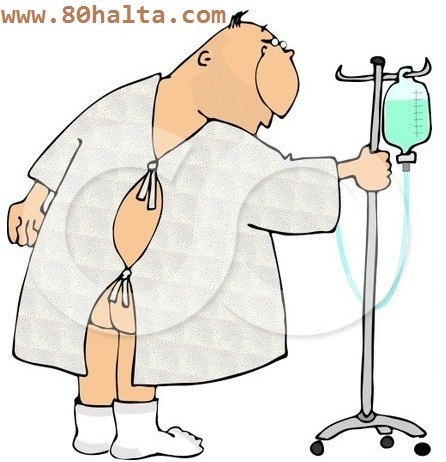

 بىرزات ئىلاۋىسى: كېچىكىمىزدە بىر كىمگە ئاسما ئوكۇل ئېسىپتۇ دېسە، كېسىلى خېلى ئېغىر ئوخشايدۇ دەيتتۇق، ئەمەلىيەتتىمۇ ئاسما ئوكۇلنى بالنىستقا ئىلىنىپ داۋالىنىۋاتقان خېلى ئېغىر كېسەللەرگە ئىشلىتەتتى. ھازىر ئەھۋال ئوخشىمايدۇ، كىشىلەر ئازىراق زۇكامداپ قالسىمۇ، ئاز تولا سوغۇق ئۆتۈپ ياكى قوقاق تېگىپ گېلى ئاغرىپ قالسا ياكى يەڭگىللا يۆتىلىپ قالسىمۇ، دورا چېپىپ تېڭىپ قويسىمۇ ساقىيىپ كېتىدىغان يەڭگىل زەخمىلەرگىمۇ دوختۇرخانىغا بىرىپ ياللۇققا قارشى ئاسما ئوكۇللارنى ئاستۇردىغان بولۇپ كەتتى. دوختۇلاردىمۇ << 4-5 كۈن ئوكۇل ئېسىۋېتىلى>> دېيىش مودا بولغاندەكلا ئوموملىشىپ كەتتى. ئەمەلىيەتتە پەقەتلا زۆرۈرىيىتى يوق، قايناق سۇ ئىچىپ، شۆۋگۈرۈچ قاينىتىپ ئىچىپ، سوغۇق ئۆتكۈزۋالماي ئارام ئالسىلا ياخشى بولۇپ كېتىدىغان كېسەللەرگىمۇ ئانتىبىئوتېكلارنى زورمۇ-زور ئىشلىتېۋىرىش نەتىجىسىدە بەدەنلىرىمىز زەھەرلەندى، كېسەلگە قارشى تۇرۇش تەبئىي ئىقتىدار ئاجىزلاشتى…
________ بىرزات
ھاياتلىق گېزىتى خەۋىرى: نيۇيورك ئۇنۋېرسىتىتى لانگونې (Langone) تىببىي مەركىزىدىكى مارتىن بۇراس دوكتور ئانتىبىئوتىك (مىكروبقا قارشى دورا) نىڭ ئاشقازاندىكى باكتىرىيەلەرگە بولغان تەسىرىنى مەخسۇس تەتقىق قىلغان. ئۇنىڭ بايقىشىچە، كۆپ قىسىم كىشلەرنىڭ ئاشقازىنىنىڭ چىقىش ئېغىزىدا بۇرما تاياقچە باكتېرىيىسى بار ئىكەن، بۇ باكتىرىيە گەرچە ئاشقازان، ئون ئىككى بارماق ئۈچەي يارىسىنىڭ ئاساسلىق سەۋەبى بولسىمۇ، ئەمما كۆپ قىسىم يۇقۇملانغۇچىلاردا كېسەل قوزغىمايدىكەن. چۈنكى، ئاشقان ئۈچەي يولىدىكى باكتىرىيەلەر ھەمىشە بىر خىل تەڭپۇڭ ھالەتكە يېتىدىغان بولۇپ، ئاسانلىقچە بىر خىل باكتىرىيەنىڭ ھەددىدىن ئېشىشىغا يوق قويمايدىكەن.
ئەمما ئاشقازان كېىسىلى بىمارلىرى ئانتىبىئوتىك (مىكروبقا قارشى دورىلار) لارنى زىيادە كۆپ ئىشلەتسە بۇ تەڭپۇڭلۇقنى بۇزۇپ، ئاشقازاننىڭ نورمال خىزمەت ئەندىزىسىنى قالايمىقانلاشتۇرۇپ تاشلايدىكەن. ئانتىبىئوتىكلار ئۈچەي يولىغا كەلگەندىن كېيىن، داۋاملىق كۈچىنى كۆرسىتىپ، ئۈچەي يولىدىكى پايدىلىق باكتىرىيەلەرگە زىيان سېلىپ، بەدەننىڭ ھورمۇن تەڭپۇڭلىقىغا تەسىر قىلىپ، ئادەمنى تېخىمۇ ئاچ قالغاندەك تۇيغۇغا كەلتۈرىدىكەن. ئاقىۋەت، ئادەمنى بارغانسرى سېمىزلىتىپ تاشلايدىكەن. يېقىنقى يىللاردا يۇقىرى قان بېسىم، تاجىسىمان يۈرەك كېسىلى، شېكەر سىيىش كېسىلى قاتارلىق ئاستا خاراكتېرلىك كېسەللەرنىڭ بارغانسرى ئەۋج ئېلىشى سېمىزلىك بىلەن مۇناسىۋەتلىك.
جۇڭگو سەھىيە مىنىستېرلىكى دورا نازارەت ئىدارىسىنىڭ مۇئاۋىن باشلىقى ياۋ جىيەنخوڭ ئاشكارا سورۇنلاردا بىلدۈرۈشىچە، جۇڭگولۇقلارنىڭ كىشى بېشىغا ھەر يىلى 8 بوتۇلكا ئاسما ئوكۇل توغرا كېلىدىغان بولۇپ،يەر شارى بويىچە ئانتىبىئوتىك دورىلارنى قالايمىقان ئىشلىتىش ئەڭ ئېغىر دۆلەت ئىكەن. شۇنداق ئېيتىشقا بولىدۇكى، ئانتىبىئوتىك دورىلار بىر ئەۋلاد جۇڭگولۇقلارنى تۈگەشتۈردى. ئىقتىسادىي مەنپەئەتتىن سىرت، ئانتىبىئوتىك دورىلارنى قالايمىقان ئىشلىتىشنىڭ سەۋەبى بىمارلارنىڭ تەلىپى ۋە دوختۇرلارنىڭ دورا ئىشلىتىش ئادىتىدىن كەلگەن. جۇڭگو تىببىي ئىلىم جەمئىيىتى ئىلىم-پەننى ئومۇملاشتۇرۇش تارمىقىنىڭ مۇدىرى، جۇڭگو قېرىلار تىببىي جەمئىيىتى نەپەس كېسەللىكلەر گۇرۇپپىسىنىڭ مۇئاۋىن مۇدىرى ليۇ شىنمىن پراففىسور پۇقرالارنىڭ چوقۇم «تۆت ياق» پىرىنسىپىنى ئېسىدە چىڭ تۇتۇشىنى دەۋەت قىلغان.
1. خالىغانچە دورا سېتىۋالماسلىق: كۆپلىگەن ئانتىبىئوتىكلار رېتسىپلىق دورا بولۇپ، چوقۇم رېتسىپقا ئاساسەن سېتىۋېلىش كېرەك.
2. ئۆزلىكىدىن دورا تاللىماسلىق كېرەك: چوقۇم دوختۇرنىڭ كۆرسەتمىسى بويىچە ئانتىبىئوتىك دورىلارنى ئىشلىتىش كېرەك.
3. خالىغانچە دورا يېمەسلىك كېرەك: گەرچە ئۆيدە ئانتىبىئوتىك دورىلار بولسىمۇ، يېيىشتىن ئىلگىرى دوختۇردىن سوراش كېرەك، زۇكامغا ئوخشاش كىچىك كېسەللەر بولسىمۇ، ھە دېسىلا ئانتىبىئوتىكلارنى ئىشلەتمەسلىك كېرەك.
4. خالىغانچە دورىنى توختىتىپ قويماسلىق كېرەك: مۇبادا ئانتىبىئوتىك دورا بىلەن داۋالىنىپ قالسا، ۋاقتىدا مىقدارى بويىچە دورا يېيىش كېرەك، باكتىرىيەلەردە دورىغا چىدامچانلىق پەيدا بولۇپ قېلىشىنىڭ ئالدىنى ئېلىشى كېرەك.
قوشۇمچە: ئاپتونوم رايونىمىزدا كۆپرەك ئىشلىتىدىغان ئانتىبىئوتىك دورىلاردىن ئاموكسىلىن (阿莫西林)، سېرفالوسپرورا (头孢类)تۈرىدىكى مىكروبقا قارشى دورىلار، ئېرىترومىتسىن (红霉素)، روكس- ئېرىترومىتسىن (罗红霉素)قاتارلىقلار بار. (تەرجىماندىن)
ئوكيان تورىدىن نەپرەت 80 خالتا تورىغا تەرجىمە قىلدى